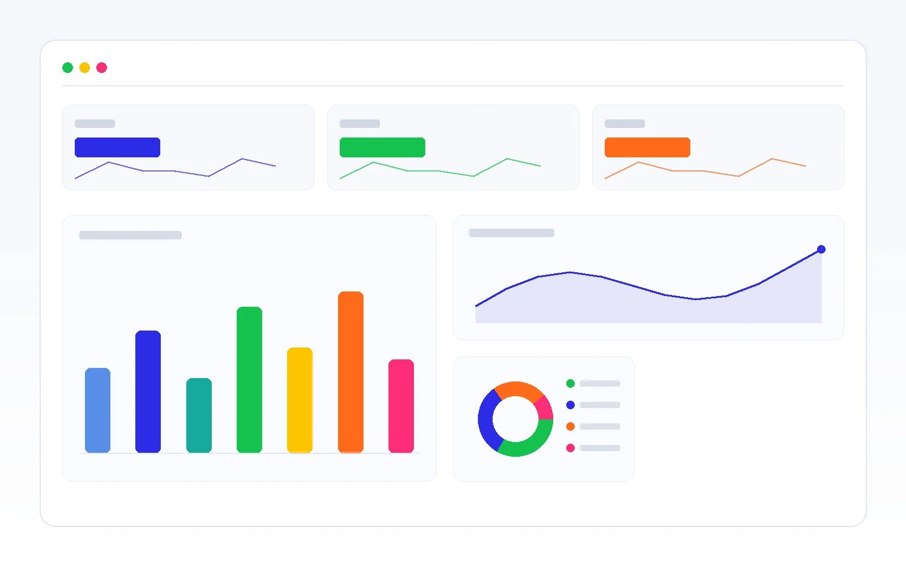

El crecimiento predecible no es suerte. Es un sistema.
Diseñamos, implementamos y optimizamos el sistema que genera demanda, convierte oportunidades y escala tu pipeline —conectando marketing, ventas y operaciones en un mismo proceso medible.
Gratis · 3 minutos · el resumen no pide datos
- Estrategia, tecnología e IA en un solo sistema
- Decisiones con datos, no con opiniones
Más publicidad no arregla un sistema roto.
Los problemas de crecimiento rara vez se resuelven con más anuncios. Casi siempre hay un cuello de botella entre lo que inviertes en marketing y lo que tu equipo comercial logra cerrar.
Inviertes más, creces igual
Subir el presupuesto sin sistema solo compra más clics. El pipeline no se mueve porque el problema no está en el anuncio, está en el proceso.
Oportunidades que se enfrían
Llegan leads, pero se pierden entre marketing y ventas: seguimiento inconsistente, sin calificación, sin registro. Demanda que pagaste y no se convierte.
Crecimiento que depende de la suerte
Sin un sistema medible no sabes qué funciona ni por qué. Los buenos meses no se pueden repetir a voluntad y escalar se vuelve una apuesta.
El crecimiento se frena en los cuellos de botella, no en el presupuesto.
Antes de recomendar nada, buscamos dónde se fuga tu demanda. Casi siempre está en uno de estos seis puntos.
Propuesta de valor difusa
Si el mercado no entiende por qué elegirte, ningún canal convierte bien.
Embudo con fugas
Cada etapa pierde oportunidades que nadie mide ni recupera.
Proceso de ventas sin método
El resultado depende de la persona, no de un sistema repetible.
Seguimiento inconsistente
Los prospectos se enfrían por falta de respuesta o de registro.
Velocidad de respuesta lenta
Quien responde primero suele quedarse con la oportunidad.
Marketing y ventas desconectados
Dos áreas que miden cosas distintas y no comparten un mismo objetivo.
¿Sabes cuál de los 7 puntos que hacen que la gente te compre le está fallando a tu negocio?
Público, problema, solución, diferenciales, testimonios, objeciones y garantía. Responde un cuestionario corto y descubre tu punto más débil —con un mini-reporte y recomendaciones para resolverlo.
Nuestro método propietario, en cinco fases.
No ejecutamos acciones aisladas. Diseñamos un sistema completo y lo llevamos de la estrategia a la escala, con una razón detrás de cada decisión.
Diagnóstico
Negocio, objetivos, competencia, embudo, procesos y métricas. No recomendamos sin comprender.
Diseño
Canales, presupuesto, CRM, automatización, medición y KPIs. Todo con una razón estratégica.
Activación
Activamos los componentes necesarios: campañas, contenido, IA y automatización. La ejecución siempre responde al plan.
Optimización
CAC, CPL, conversión, SQL, pipeline. Cada decisión con datos; cada mejora, una hipótesis.
Escala
Validado el sistema, escalamos inversión, canales y procesos de forma sostenible.
Un solo sistema para marketing, ventas y operaciones.
La razón por la que las tácticas sueltas no escalan es que nadie las conecta. Nuestro trabajo es unirlas en un proceso que se mide y se mejora continuamente.

Conectamos las tres áreas
Marketing genera demanda, ventas la convierte y operaciones la sostiene —todo bajo un mismo objetivo y un mismo tablero.
Medimos lo que importa
No clics: pipeline, CAC, conversión, SQL y LTV. Los KPI se definen antes de ejecutar, no después.
Iteramos con hipótesis
Cada cambio parte de una hipótesis y se valida con datos. Así el crecimiento se vuelve repetible, no casual.
Lo que el sistema mueve en tu negocio.
No vendemos Ads, CRM o IA por separado: son componentes que trabajan dentro de un mismo sistema de crecimiento. Vendemos el resultado que producen cuando operan juntos.
Más demanda
Un flujo constante y medible de oportunidades, no picos aislados.
Mejor calidad de leads
Calificación que prioriza SQL sobre volumen; tu equipo habla con quien sí compra.
Mayor conversión
El proceso comercial deja de perder oportunidades por el camino.
Mejor seguimiento
Ningún prospecto se enfría por falta de respuesta o de registro.
Automatización
El sistema hace el trabajo repetitivo; tu equipo, el estratégico.
Escalabilidad y retorno
Crecer sin multiplicar tareas manuales, midiendo cada peso contra pipeline y revenue.
Reto, sistema y resultado.
Intervenciones reales. El mismo patrón en cada una: qué problema existía, qué se construyó y la métrica que demuestra el cambio.
Campañas con baja rentabilidad y un funnel con fricción. La generación de demanda funcionaba, pero una parte de las oportunidades se perdía entre adquisición, landing y proceso comercial.
Auditoría de campañas y funnel, optimización de landings, reestructuración de campañas y distribución geográfica, análisis por mercado y audiencia, alineación Marketing–Ventas y mejora del flujo mobile.
Generación de demanda B2B con audiencias distintas y necesidad de mejorar la calidad y el volumen de oportunidades calificadas.
Landing pages específicas por audiencia B2B, adaptación del mensaje y propuesta de valor por segmento, flujos de adquisición dedicados y optimización de la generación de MQL.
Modelo de adquisición con ROAS negativo y necesidad de recuperar la rentabilidad de la inversión publicitaria.
Proceso de optimización de seis meses: análisis continuo de campañas, optimización progresiva de la inversión, testing y aprendizaje, y mejora de la estructura de adquisición sobre datos.
Los resultados presentados corresponden a intervenciones reales. No publicamos cifras que no podamos respaldar y documentamos cada caso conforme los sistemas maduran.
El stack que ejecuta el sistema.
Las herramientas no son el producto: son los componentes con los que construimos y operamos tu sistema de crecimiento.
Generación de demanda
Canales de adquisición orquestados dentro del sistema, no como servicios sueltos.
CRM y pipeline
El sistema nervioso comercial: cada oportunidad registrada, medida y con seguimiento.
IA y automatización
Elimina el trabajo repetitivo y acelera el seguimiento sin sumar headcount.
Datos y medición
Todo se decide con datos. Un tablero único de negocio, no métricas de vanidad.
Lo que pregunta un director antes de invertir
¿Por qué ustedes y no una agencia?
Una agencia ejecuta tácticas: anuncios, publicaciones, campañas. Nosotros diseñamos el sistema que ordena esas tácticas y las conecta con ventas y operaciones. Competimos por pensamiento estratégico, no por entregar más piezas.
¿Por qué invertir ahora?
Cada trimestre con cuellos de botella es pipeline que no se recupera. El costo de operar sin sistema es silencioso pero constante: demanda que pagas y no conviertes, y crecimiento que no puedes repetir a voluntad.
¿Cómo medirán el éxito?
Con métricas de negocio, no de vanidad: pipeline, CAC, CPL, conversión, SQL/MQL y LTV. Los KPI se definen en el blueprint —antes de ejecutar— para que sepas exactamente contra qué se mide cada peso.
¿Qué riesgos existen?
El primer paso es un Diagnóstico Ejecutivo de bajo riesgo, con un entregable propio: sabes qué sistema vas a construir y por qué antes de comprometerte a implementarlo. No prometemos resultados imposibles; mostramos el criterio detrás de cada decisión.
¿Cómo trabajan?
Con el Easy Growth System™: cinco fases de diagnóstico a escala. Nada se ejecuta sin plan y nada se optimiza sin datos. Cada acción impacta demanda, calidad de leads, conversión, seguimiento, automatización o retorno.
¿Cuánto tiempo toma?
El diagnóstico y el blueprint toman semanas. La activación empieza rápido. La escala llega cuando el sistema está validado con datos —no antes: escalar algo que no funciona solo multiplica el problema.
¿Y si ya tengo marketing?
Mejor. No reemplazamos a tu equipo: conectamos lo que ya haces dentro de un sistema y eliminamos los cuellos de botella que lo frenan. En muchos casos el crecimiento aparece al ordenar lo existente, no al gastar más.
Empieza por entender dónde se fuga tu demanda.
Una sesión estratégica donde mapeamos tu embudo, detectamos los cuellos de botella y definimos las prioridades. Sales con un plan claro —trabajes con nosotros o no.

- Un mapa de dónde se pierde tu demanda hoy.
- Las prioridades de mayor impacto en tu pipeline.
- Una recomendación clara del sistema a construir.
Es para ti si…
- Eres una empresa B2B consolidada con equipo comercial.
- Tienes capacidad comercial y operativa para atender nuevas oportunidades.
- Buscas construir un sistema de crecimiento de largo plazo, no un pico.
No es para ti si…
- Buscas resultados inmediatos o únicamente comprar publicidad.
- Aún no tienes capacidad comercial ni presupuesto para un sistema.
Construyamos tu sistema de crecimiento.
Analicemos juntos tu proceso comercial y dónde se fuga la demanda. El primer paso es una sesión estratégica, sin compromiso.